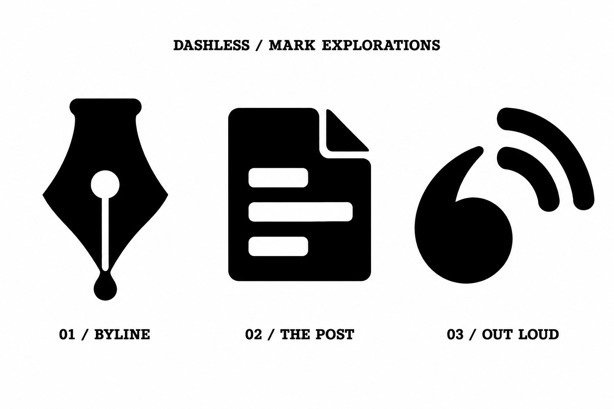

Write it.
Post it.
Put it out there.
Three different starting points for the mark: personal authorship, the published post, and a voice reaching readers. These are alternatives to the bear.

Your name on it.
A substantial pen nib with a drop of ink. The focus is personal authorship: your words, written your way.
Immediate writing connection. Familiar territory; the silhouette needs a more distinctive detail if developed.
Something to publish.
A bold page with a headline and uneven lines. The focus is the post itself: a small piece of the web that belongs to you.
The most literal option. Clear, but closer to a document or editor icon than a distinctive identity.
Words find readers.
An opening quotation mark with broadcast arcs. A connection between personal expression and the familiar language of blog feeds.
The most promising combination. Needs careful proportion work to avoid reading as a generic podcast or wireless symbol.
I’d develop Out Loud next. It has a connection to both writing and sharing it. The quote can borrow the curves of the chunky wordmark so the two feel related.
Exploratory generated artwork, not production marks. No vector, favicon, or print readiness is claimed for these alternatives.
{kind=link}